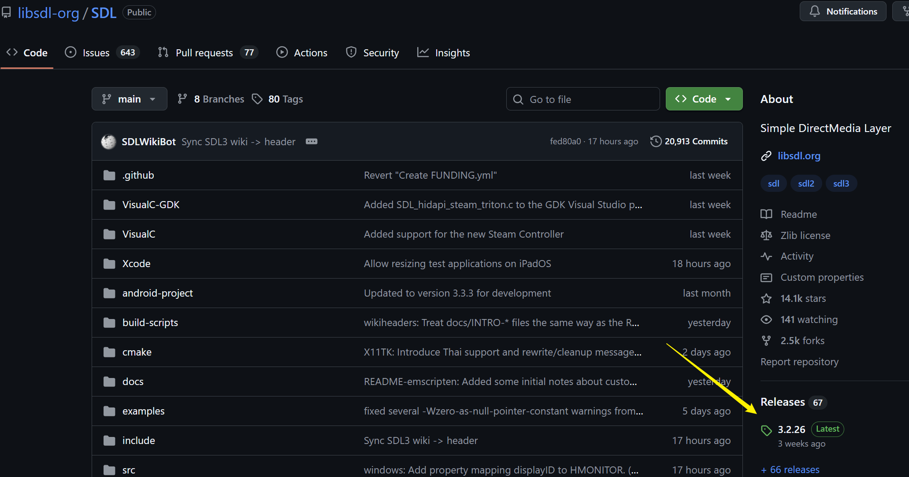
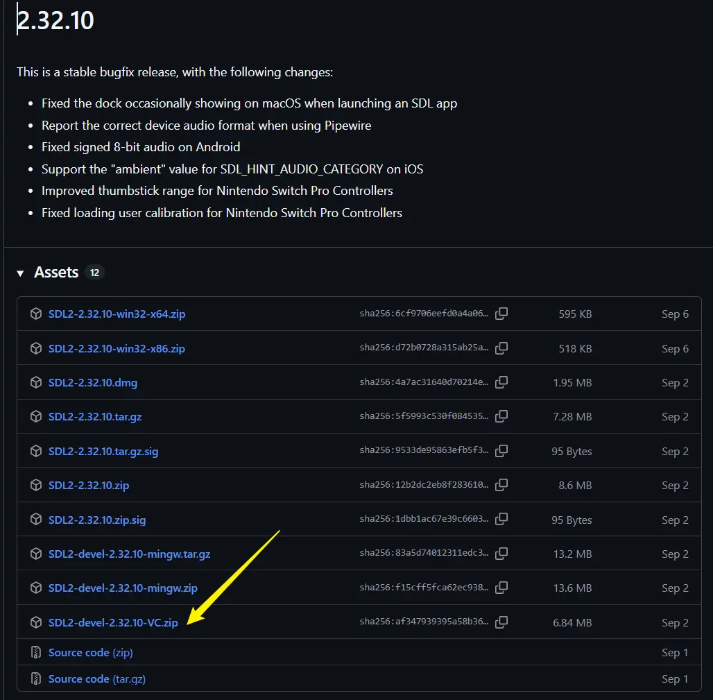
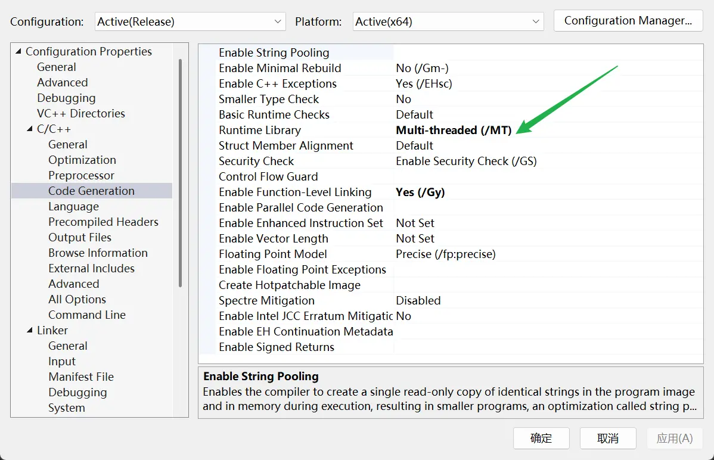
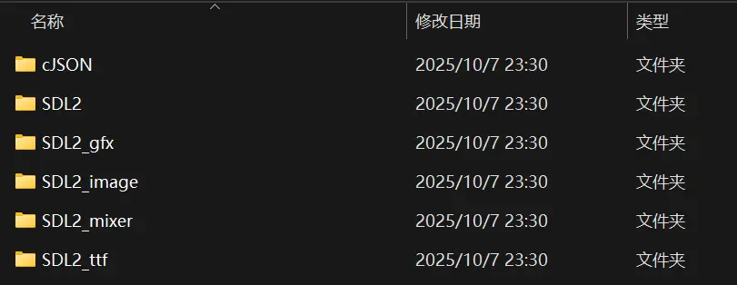
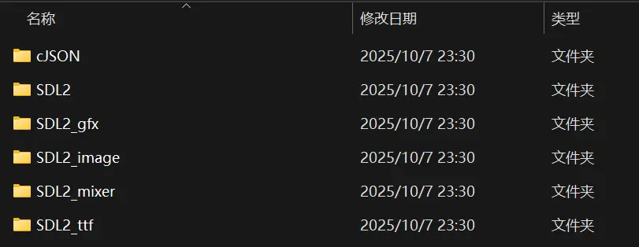
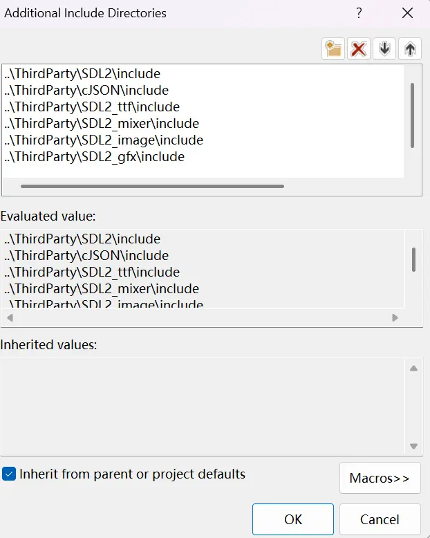

Course Source：Bilibili-Voidmatrix
SDL Library
Introduction
SDL stands for Simple DirectMedia Layer. It is a lightweight framework that makes it possible to run the same code on different operating systems and hardware. In other words, once you build a project with SDL, you can compile and run it across multiple platforms. The interface is written in C, so it is clear and easy to use.
Commonly used add‑on libraries include SDL_image (for loading images), SDL_ttf (for fonts), and SDL_mixer (for audio). SDL also provides SDL_Renderer, which wraps graphics APIs such as OpenGL, Vulkan, and DirectX. On each platform, SDL chooses the right backend automatically.
SDL is widely used and trusted in the industry. Many game engines and projects are built on top of it, showing that it is a mature and reliable technology.
Getting / Downloading
Go to the official SDL GitHub repository. Open the Releases section and download the latest version marked Latest.
After opening the page, choose the version that matches your operating system. Since this project uses SDL2 (note that SDL3 is already available), select the latest release that starts with 2. As the project is developed with Visual Studio, download the corresponding version listed below.
Similarly, install SDL_ttf (text rendering), SDL_image (image rendering), SDL_mixer (audio decoding), and SDL_gfx (basic primitive drawing). Note that this project uses SDL2, so all of these libraries should be installed in their SDL2 versions. If you are using SDL3, make sure to install the corresponding SDL3 versions instead. Also, SDL_gfx is hosted on a separate website, while the other three are available on GitHub.
In addition, you will need cJSON, which can be obtained in a similar way.
Development Environment Setup
General Configuration
Right‑click the project name (not the “solution name”), go to Properties, then under C/C++ → Code Generation, change Runtime Library to MT. Finally, click OK or Apply in the lower‑right corner of the dialog. This setting helps prevent DLL missing errors on computers that do not have Visual Studio or the related C++ libraries installed.
Configuring Third‑Party Libraries
Place all SDL‑related files into a single folder to make future management easier. In the example below, the solution is named “TowerDefence”, and it contains two projects: “Demo” and “TowerDefence”.
 

Next, configure the settings in the order used by C++ compilation: header files, library files, and dynamic link libraries.
Header File Configuration
Open the Properties window in the same way as before. Go to C/C++, and in the first line on the right, add the relevant SDL header files. Note that by default, Visual Studio uses absolute paths when adding files. For flexibility, change them to relative paths:
Once this is done, Visual Studio will be able to recognize header files such as SDL.h. One important detail to note is that SDL also defines its own main function. To avoid conflicts, add the following line at the very beginning of your code:
|
|
Setting Library Files in the Linker
Again, open the Properties window. Go to Linker → General, and on the right side locate Additional Library Directories.

Since my computer is 64‑bit (x64), the 32‑bit (x86) files are not needed and can be safely removed (no need to add them).

Setting Up Dynamic Link Libraries
Open the lib folder inside each SDL package, locate the corresponding .dll files, and copy them into your project folder (in this example, the Demo project).


Note that SDL_gfx does not provide dynamic link libraries, so there are no DLL files.
Setting up cJSON
In the Solution Explorer, under Source Files, create a new filter. Then simply drag and drop the cJSON source files into it.

At this point, the full SDL2 package has been successfully configured in Visual Studio.